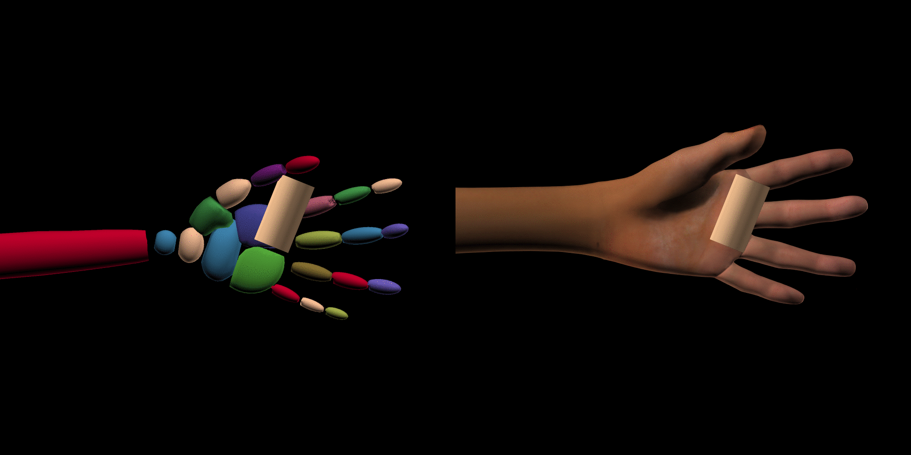
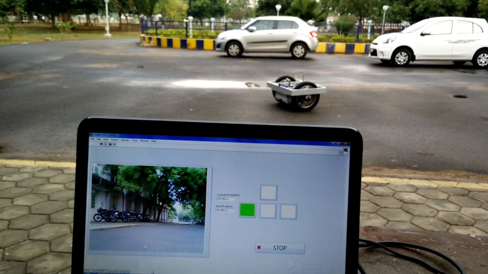

|
K. Niranjan Kumar I am a PhD candidate at Georgia Institute of Technology working with Sehoon Ha and Irfan Essa. My research is in the union of Robot learning + Legged robots + Interactive perceptionI am in the job market for post-doc and industry research roles in robotics. Please reach out to me if you have any opportunities. Email / CV / Google Scholar / Twitter |

|
ResearchMy current research focus involves creating learning-based policies that enable high-DOF robots to exhibit natural fluid behaviors, all while reducing the reliance on intricate reward engineering. To this end, my ongoing work involves using Large Language Models (LLMs) for iterative, human-guided refinement for learned control policies. |
|
|
Words into Action: Learning Diverse Humanoid Robot Behaviors using Language
Guided Iterative Motion Refinement
K. Niranjan Kumar, Irfan Essa, Sehoon Ha LangRob workshop CoRL, 2023 project page / arXiv Learning rich humanoid behaviors from human language instructions. |
|
|
BayRnTune: Adaptive Bayesian Domain Randomization via Strategic
Fine-tuning
Tianle Huang Nitish Sontakke K. Niranjan Kumar, Irfan Essa, Sehoon Ha Stefanos Nikolaidis Dennis W Hong Under Review, 2023 arXiv Tune simulation parameters to efficiently transfer to target environment. |
|
|
Cascaded Compositional Residual Learning for Complex Interactive
Behaviors
K. Niranjan Kumar, Irfan Essa, Sehoon Ha Robotics and Automation Letters, 2023 project page / arXiv / video Cascaded Compositional Residual Learning (CCRL), which learns composite skills by recursively leveraging a library of previously learned control policies. |
|
|
Graph-based Cluttered Scene Generation and Interactive Exploration using
Deep Reinforcement Learning
K. Niranjan Kumar, Irfan Essa, Sehoon Ha ICRA, 2022 arXiv / video Finding hidden objects in structured cluttered environments using deep reinforcement learning. |
|
|
Estimating Mass Distribution of Articulated Objects using Non-prehensile
Manipulation
K. Niranjan Kumar, Irfan Essa, Sehoon Ha, Karen Liu Object Representations for Learning and Reasoning Workshop NeurIPS, 2020 arXiv / video Learning interaction policies to estimate mass distribution of articulated objects in minimal steps. |
Projects |

|
Motion textures from static images
Built an algorithm that converts an image into an infinitely looping video using a neural network and user input. |
|

|
Realistic video generation of hand-object interactions
We generate realistic hand manipulations of object by using a Generative Adversarial Network by conditioning on the hand and finger pose. We adopt an encoder-decoder architecture where we input a rough rendering of the skeletal pose and get a realistic rendering of a hand as the output. We generate datasets with simulated and real human arms at different poses and use it to train our model. Given an hand pose and object pose we showcase a pipeline to generate an image conditioned on the poses. |

|
Automatic eye-dropper
Design an automated eye-dropper that detects the patients eye, adminsters the eye drop and registers if the adminstration was successful using CV (eye-tracking, blink detection, drop tracking). |
|

|
Tele-operated mobile robot
Built a controller for tele-operated mobile robot that can be controlled using a computer keyboard. |
ServiceWeb Chair, CoRL 2023 Reviewer for TRO, THRI, IROS, RAL |
TeachingGTA for CS6475 Computational Photography |
Mentoring ExperienceI have had the pleasure of working with the following students over the years: Alex Kim Hrishikesh Kale Xingfang Yuan Mili Das |
|
Template borrowed from here. |